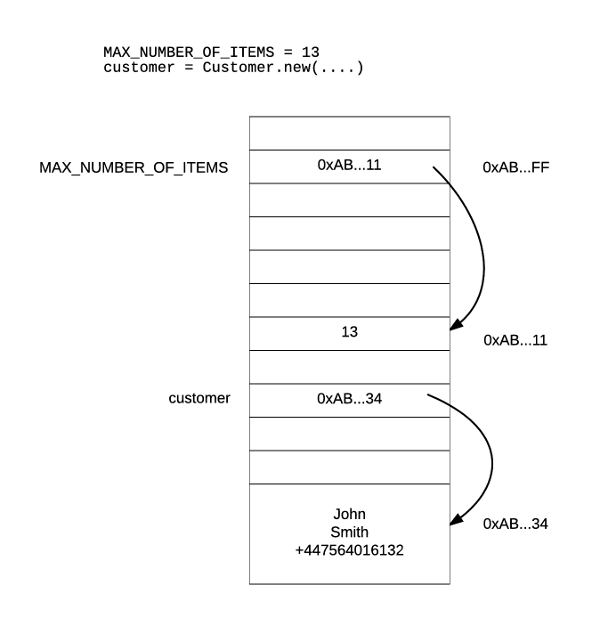
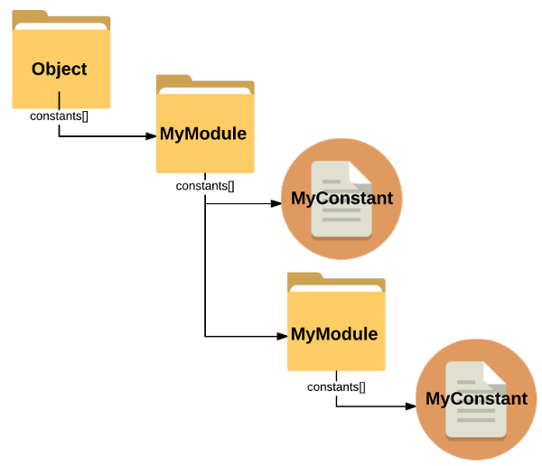
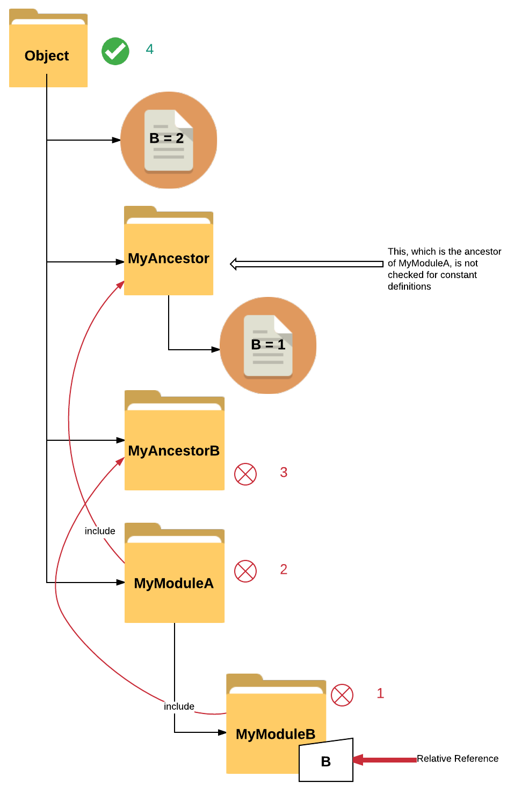

Ruby is an Object Oriented Language with many unique characteristics that make it, not only a pleasure to work with, but really powerful too. If you ever came across constants in other languages you will be surprised how Ruby defines constants, and, actually, how Ruby loads them into memory. On top of that, Ruby on Rails takes it even further and uses a convention to allow constants to be loaded with minimum programmer’s hassle.
Introduction
This post is a long presentation on how constants are treated by Ruby (part I) and then by Ruby on Rails part II. In fact the core of the text is around how constants are defined and how they are resolved. It demonstrates how Ruby does the constant resolution and how this differs from the method Ruby on Rails uses. In order to elaborate on this core subject, we are also unfolding various other satellite details, nevertheless, always around constants.
Why You May Want To Know About Constants
Knowing about constants, how they are defined and how they are being resolved, is a knowledge that will be proven useful when debugging your application.
You may come across situations in which you expected a constant to be found, but it was not. Or you may have come to a situation in which you see warnings
about your constants being defined multiple times without actually understanding why. Besides that, understanding how Ruby and Ruby on Rails deals with constants
will allow you to write cleaner and less code, knowing when to use require vs load or even better avoid any of them altogether.
Code Examples Used In This Post
This post is referencing lots of Ruby and Ruby on Rails code examples. You can find all the source code here:
Loading Constants - Ruby vs Rails Code Examples Source Code
Table of Contents
Part I
- What Is a Constant in Ruby
- Ruby Keeps Track Of Constants Defined
Object.constants- Accessing Undefined Constants
- Which Piece of Code Raises the
NameError? - Another Method To Check that a Constant is Defined Or Not
- Removing A Defined Constant
- Classes And Modules Are Constants Too
- Nesting And Constants
- Getting the Nesting Path
- How Constants Are Resolved When References Are Nested?
- Overriding
const_missingon Nested Cases const_missingfor Classes and Modules
Part II
- Ruby On Rails - Constant Resolution
- Application Entry Point
- Ruby Parsing of Files -
loadvsrequire - Rails Parsing of Files -
loadvsrequire - Qualified Constants - Autoloading With Nesting
- Add Folders to Autoload Paths
- How does Rails Reloads Constants in Development Environment?
config.eager_load- How Does Rails Attaches The Autoloading Mechanism to Constant Missing Hook?
- Watch Out for
requiresandrequire_relatives
What is a Constant in Ruby?
Let’s just start from the very basics. Do we all know what a constant is in Ruby?
A constant is like a variable, from one point of view. Like a variable, it is a memory position that has a name and points to another place in memory that holds the actual content.
But, how do we define constants in Ruby? Again, it is the same way that we define variables, by assigning them a value. However, the name needs to start with an uppercase Latin character. Example:
C = 1 # this is a new Constant

The names of the constants and variables are there for us to make our life easier when programming. So, when we have to access the content a constant or variable is pointing to, we only have to use the name of the constant or the variable. We do not have to use the corresponding hex number of the memory address.
We are so lucky programming in high level programming languages. Long time ago, developers had to program in assembly, and they, yes, believe it, had to reference memory addresses and registers using hex numbers, or even worse, bits and bytes.
On the other hand, constant pointing content, cannot be changed, whereas variable pointing content can. That’s why the former are called constants, whereas the latter are called variables.
In fact, Ruby is a place where you can have lots of freedom and you can actually change the content of a constant, but you will get a warning! It can also try to tell you where the previous definition of the constant is.
# Try this on the irb console:
#
irb(main):001:0> C = 5
=> 5
irb(main):002:0> C = 6
(irb):2: warning: already initialized constant C
(irb):1: warning: previous definition of C was here
=> 6
Or you can try this:
ruby constant_redefinition.rb
with constant_redefinition.rb being:
# FILE: constant_redefinition.rb
#
C = 1
C = 2
You will get this:
constant_redefinition.rb:2: warning: already initialized constant C
constant_redefinition.rb:1: warning: previous definition of C was here
Nice warning and informative text. Look how it tells you that the previous definition of C was on file constant_redefinition.rb on line 1.
Ruby Keeps Track Of Constants Defined
I guess that this comes natural to you. Ruby keeps track of constants defined. Yes. Of course it does. That’s why it can tell you whether a constant is already defined and where.
We will not delve into too much detail about all the meta-data that Ruby keeps for each constant defined. We will only give you some details that are relevant to our discussion. And actually, let’s learn that stuff by doing some examples:
Object.constants
Let’s start by running the following program:
ruby object_constants.rb
where object_constants.rb is
# FILE: object_constants
#
puts self.class
puts Object.constants.inspect
puts "Is C inside Object constants? #{Object.constants.include?(:C)}"
C = 1
puts Object.constants.inspect
puts "Is C inside Object constants? #{Object.constants.include?(:C)}"
The output is going to be something like this:
Object
[:Object, :Module, :Class, ... :Monitor, :RUBYGEMS_ACTIVATION_MONITOR]
Is C inside Object constants? false
[:Object, :Module, :Class, ... :Monitor, :C, :RUBYGEMS_ACTIVATION_MONITOR]
Is C inside Object constants? true
The above proves that when we define a constant at the top level of our programming scope, then it adds it to the
Object.constants array as a symbol.
Keep a note that the array constants belongs to the Object which is the class of self (see a little bit later on),
i.e. the class of the top level scope when we start writing Ruby commands.
Accessing Undefined Constants
What happens when we try to access a constant that is not defined? Let’s try that:
# FILE: access_undefined_constant.rb
#
C
If you call ruby access_undefined_constant.rb you will get this:
access_undefined_constant.rb:3:in `<main>': uninitialized constant C (NameError)
So, this is a NameError. The error message clearly tells you that the C is not defined.
Which Piece of Code Raises the NameError?
So, Ruby tries to find the C constant defined inside Object.constants array and it does not find it (or, this is more or less
what it is doing when encountering a constant). What does it do when it cannot find it?
It calls the .const_missing() method of the Object class. We can redefine that and verify that this is the
method that is actually called:
# File: redefine_object_const_missing.rb
#
class Object
def self.const_missing(const_name)
raise NameError, "Oooooops! #{const_name} is missing!"
end
end
C
If you call ruby redefine_object_const_missing.rb, you will get this:
redefine_object_const_missing.rb:5:in `const_missing': Oooooops! C is missing! (NameError)
from redefine_object_const_missing.rb:9:in `<main>'
As you can see from the message above, we now get an exception on line 9 of the program, and the
NameError returned is the one that is instantiated on line 5.
Lines 3 to 7 above, they open class Object and they redefine the class method .const_missing. Note that
self, that receives the C statement on line 9, is an instance of Object class. That’s why when we redefine the
Object.const_missing we actually redefine the way self will be treating the constants that are not defined in its class.
This is what I just said with regards to self and Object relationship:
selfis instance ofObject.Objectis instance ofClass, which, basically means, it is a class *.
* Hey! In Ruby a class is actually an object. No? They are instances of
Classclass.
Another Method To Check that a Constant is Defined Or Not
There is another method that you can use to check whether a constant is defined or not.
It is the keyword defined? which takes as argument anything that we want to check whether it is defined or not. It returns nil if something is
not defined. It returns a string describing the type of given argument, if it is defined.
Try this:
# File: check_constant_definition_with_defined.rb
#
C = 1
puts "Is C defined?: #{defined?(C) || 'no'}"
puts "Is D defined?: #{defined?(D) || 'no'}"
When you run that you get:
Is C defined?: constant
Is D defined?: no
which clearly mentions that C is a defined constant, whereas D is not defined.
Removing a Defined Constant
Generally, you cannot undefine a constant, unless you call the private method #remove_const on the Object instance.
Try this:
# File: removing_constant.rb
#
C = 1
puts "Is const defined? #{Object.const_defined?(:C)}"
Object.send :remove_const, :C
puts "Is const defined? #{Object.const_defined?(:C)}"
You will get:
Is const defined? true
Is const defined? false
It worked, didn’t it? The constant C has been removed/undefined after Object.send :remove_const, :C.
Classes And Modules Are Constants Too
Since in Ruby we name classes and modules using uppercase Latin characters, it wouldn’t be a surprise to you if I told you that classes and module are, among other things, constants too.
Like the other constants, classes and modules need to be defined and then referenced, i.e. used.
Try the following program that defines a class:
# File: class_definition.rb
#
puts "Is MyClass included in Object constants? #{Object.constants.include?(:MyClass)}"
class MyClass
end
puts "Is MyClass included in Object constants? #{Object.constants.include?(:MyClass)}"
When you run that with ruby class_definition.rb, you will see this:
Is MyClass included in Object constants? false
Is MyClass included in Object constants? true
Aha! the class MyClass ... end has defined a new constant which is now included in Object.constants array as :MyClass.
Let’s do the same for a module:
# File: module_definition.rb
#
puts "Is MyModule included in Object constants? #{Object.constants.include?(:MyModule)}"
class MyModule
end
puts "Is MyModule included in Object constants? #{Object.constants.include?(:MyModule)}"
If you run the above with ruby module_definition.rb you will get this:
Is MyModule included in Object constants? false
Is MyModule included in Object constants? true
And what if we define a class or a module using the other (you know which, don’t you) technique to create classes and modules?
Try that:
# File: class_definition_technique_2.rb
#
puts "Is MyClass included in Object constants? #{Object.constants.include?(:MyClass)}"
MyClass = Class.new
puts "Is MyClass included in Object constants? #{Object.constants.include?(:MyClass)}"
If you run that with ruby class_definition_technique_2.rb, you will get the same output like you did when your ran
ruby class_definition.rb.
You can try with
MyModule = Module.newtoo. You will get similar results.
Nice! The above examples show that defining classes and modules creates constants too.
And don’t forget that you use a class or module definition exactly as you use other constants. You just use their name.
Nesting and Constants
We all know that in Ruby, we can use nesting to group together various definitions that logically belong to the same concept. But how does nesting affect the constants definition? The answer is that the defined constants are qualified by the module they are nested in.
Let’s see that with an example:
# File: nesting.rb
#
module MyModule
MyConstant = 'Outer Constant'
module MyModule
MyConstant = 'Inner Constant'
end
end
puts "Is MyModule defined?: #{defined?(MyModule) || 'no'}"
puts "Is MyModule defined in Object?: #{Object.const_defined?(:MyModule)}"
puts "Is MyModule::MyConstant defined?: #{defined?(MyModule::MyConstant) || 'no'}"
puts "Is MyModule::MyModule defined?: #{defined?(MyModule::MyModule) || 'no'}"
puts "Is MyModule::MyModule::MyConstant defined?: #{defined?(MyModule::MyModule::MyConstant) || 'no'}"
puts "Is MyConstant defined in Object:: #{Object.const_defined?(:MyConstant)}"
MyModule
MyModule::MyConstant
MyModule::MyModule
MyModule::MyModule::MyConstant
If you run the above, you will get this:
Is MyModule defined?: constant
Is MyModule defined in Object?: true
Is MyModule::MyConstant defined?: constant
Is MyModule::MyModule defined?: constant
Is MyModule::MyModule::MyConstant defined?: constant
Is MyConstant defined in Object:: false
The above Ruby program defines 4 constants:
MyModuleMyModule::MyConstantMyModule::MyModuleMyModule::MyModule::MyConstant
As you can see it works like files and folders. A file can have the same name with another file, as long as the two files exist
in different folders. Same goes for constants. MyConstant living in MyModule is different to the one living in MyModule::MyModule.
When using nesting, you actually start defining constants inside the constants array of the nesting elements. Hence, MyModule::MyConstant
definition has appended the element :MyConstant inside the MyModule.constants array.
If you add the following lines to the nesting.rb program …
puts "MyModule constants: #{MyModule.constants}"
puts "Is MyConstant defined in MyModule.constants?: #{MyModule.const_defined?(:MyConstant)} "
puts "Is MyModule defined in MyModule.constants?: #{MyModule.const_defined?(:MyModule)} "
puts "MyModule::MyModule constants: #{MyModule::MyModule.constants}"
puts "Is MyConstant defined in MyModule::MyModule constants: #{MyModule::MyModule.const_defined?(:MyConstant)}"
and then run it, you will get these extra lines printed:
MyModule constants: [:MyConstant, :MyModule]
Is MyConstant defined in MyModule.constants?: true
Is MyModule defined in MyModule.constants?: true
MyModule::MyModule constants: [:MyConstant]
Is MyConstant defined in MyModule::MyModule constants: true
Note that MyModule constant is defined both in Object and in MyModule constants. But they are different. The former is the
top level root constant, whereas the latter is the nested constant inside the MyModule nesting constant (MyModule::MyModule).

Getting the Nesting Path
Module.nesting call gives you the nesting path elements. Try this:
# File: nesting_path.rb
#
puts "Module.nesting at root level: #{Module.nesting}"
module MyModule
puts "Module.nesting at MyModule level: #{Module.nesting}"
MyConstant = 'Outer Constant'
module MyModule
puts "Module.nesting at MyModule::MyModule level: #{Module.nesting}"
MyConstant = 'Inner Constant'
end
end
If you run the above, you will get:
Module.nesting at root level: []
Module.nesting at MyModule level: [MyModule]
Module.nesting at MyModule::MyModule level: [MyModule::MyModule, MyModule]
So, every time you nest (with a class or module definition), then the current new path is added *at the beginning of the Module.nesting array.
How Constants Are Resolved When References Are Nested?
It’s clear from the above how the constants are defined, when nested inside other constants definition blocks (classes or modules). But how Ruby resolves a reference to a constant when that one is invoked inside a nesting point?
Resolving Constants
Case #1 - Found in Any of Nesting Points
A constant might be referenced using a relative reference. This means it is not prefixed with ::. Let’s see the following example:
# File: resolving_constants_relative_reference_1.rb
#
module MyModuleA
B = 1
puts "MyModuleA defines B? #{MyModuleA.const_defined?(:B)}"
module MyModuleB
puts "MyModuleA::MyModuleB nesting: #{Module.nesting}" # => [MyModuleA::MyModuleB, MyModuleA]
puts B
puts "MyModuleA::MyModuleB defines B? #{MyModuleA::MyModuleB.const_defined?(:B)}"
puts "MyModuleA defines B? #{MyModuleA.const_defined?(:B)}"
end
end
MyModuleA::B
If you run the above, you will see this:
MyModuleA defines B? true
MyModuleA::MyModuleB nesting: [MyModuleA::MyModuleB, MyModuleA]
1
MyModuleA::MyModuleB defines B? false
MyModuleA defines B? true
On line 10, the B is a relative reference. Ruby will try to check whether this constant is defined in any of the
modules or classes listed in Module.nesting array at the point where the B is referenced. It fails to find this
constant defined in MyModuleA::MyModuleB, but it succeeds in finding it in MyModuleA
Note that the fully qualified name of the constant B is MyModuleA::B.
If we move the definition of B inside the MyModuleA::MyModuleB scope, it will be found there:
# File: resolving_constants_relative_reference_2.rb
#
module MyModuleA
puts "MyModuleA defines B? #{MyModuleA.const_defined?(:B)}"
module MyModuleB
puts "MyModuleA::MyModuleB nesting: #{Module.nesting}" # => [MyModuleA::MyModuleB, MyModuleA]
B = 1
puts B
puts "MyModuleA::MyModuleB defines B? #{MyModuleA::MyModuleB.const_defined?(:B)}"
puts "MyModuleA defines B? #{MyModuleA.const_defined?(:B)}"
end
end
MyModuleA::MyModuleB::B
If we run the above, we will get this:
MyModuleA defines B? false
MyModuleA::MyModuleB nesting: [MyModuleA::MyModuleB, MyModuleA]
1
MyModuleA::MyModuleB defines B? true
MyModuleA defines B? false
Note that the fully qualified name of the constant B is MyModuleA::MyModuleB::B.
Case #2 - Found in Ancestors of First Nesting Point
When a constant is not found in any of the nesting points, then Ruby tries to find it in the constants of the ancestors of the first nesting point (class or module).
Let’s see the following example:
# File: resolving_constants_ancestors.rb
module MyAncestor
B = 1
puts "MyAncestor defines B? #{MyAncestor.const_defined?(:B)}"
end
MyAncestor::B
module MyModuleA
module MyModuleB
puts "MyModuleA::MyModuleB.nesting is #{Module.nesting}"
puts "(before including MyAncestor) MyModuleA::MyModuleB defines B? #{MyModuleA::MyModuleB.const_defined?(:B)}"
puts "(before including MyAncestor) MyModuleA::MyModuleB.constants includes B? #{MyModuleA::MyModuleB.constants.include?(:B)}"
include MyAncestor
puts "MyModuleA::MyModuleB Ancestors: #{MyModuleA::MyModuleB.ancestors}"
puts "(after including MyAncestor) MyModuleA::MyModuleB defines B? #{MyModuleA::MyModuleB.const_defined?(:B)}"
puts "(after including MyAncestor) MyModuleA::MyModuleB.constants includes B? #{MyModuleA::MyModuleB.constants.include?(:B)}"
B
end
end
MyAncestor::B
MyModuleA::MyModuleB::B
MyModuleA::MyModuleB::B.object_id == MyAncestor::B.object_id
MyAncestor::B = 2
puts "Is MyModuleA::MyModuleB::B still equal to MyAncestor::B? #{MyModuleA::MyModuleB::B == MyAncestor::B}"
If you run the above, you will get this:
MyAncestor defines B? true
MyModuleA::MyModuleB.nesting is [MyModuleA::MyModuleB, MyModuleA]
(before including MyAncestor) MyModuleA::MyModuleB defines B? false
(before including MyAncestor) MyModuleA::MyModuleB.constants includes B? false
MyModuleA::MyModuleB Ancestors: [MyModuleA::MyModuleB, MyAncestor]
(after including MyAncestor) MyModuleA::MyModuleB defines B? true
(after including MyAncestor) MyModuleA::MyModuleB.constants includes B? true
resolving_constants_ancestors.rb:43: warning: already initialized constant MyAncestor::B
resolving_constants_ancestors.rb:4: warning: previous definition of B was here
Is MyModuleA::MyModuleB::B still equal to MyAncestor::B? true
B is defined inside MyAncestor and then MyAncestor is included in MyModuleA::MyModuleB. Before we actually include MyAncestor,
B was not defined in MyModuleA::MyModuleB. Immediately after we included MyAncestor, B appeared to be defined in MyModuleA::MyModuleB.
Then, on line 23, we reference B. This is a relative reference and Ruby tries to find where this constant is defined. It does find it on the
first nesting point.
In fact, MyAncestor::B and MyModuleA::MyModuleB::B are same constant objects. If one changes the first, it changes the second as well. They
have the same object_id.
Case #3 - Found in Object
Earlier on, we have learnt that Ruby first looks to find the constant inside the constants of the nesting points as these are returned by
Module.nesting. If constant referenced is not found, then it tries to find it inside the constants of the ancestors of the first
item in the Module.nesting, i.e. inside the ancestors of the current nesting point.
What if it is not found there either?
Then it searches the Object constants. This may come to a surprise to you, but, it does not search the ancestors of the other nesting points.
It did that only for the current, first, nesting point.
Let’s see the following example:
# File: resolving_constants_searching_in_object.rb
#
B = 2
module MyAncestor
B = 1
end
module MyAncestorB
end
module MyModuleA
include MyAncestor
puts "Module nesting of MyModuleA: #{Module.nesting}"
puts "Ancestors of MyModuleA: #{MyModuleA.ancestors}"
module MyModuleB
include MyAncestorB
puts "Module nesting inside MyModuleA::MyModuleB is: #{Module.nesting}"
puts "Ancestors of MyModuleA::MyModuleB: #{MyModuleA::MyModuleB.ancestors}"
puts "Referencing B inside MyModuleA::MyModuleB: #{B} (resolves to the Object constant :B)"
puts "B.object_id == ::B.object_id : #{B.object_id == ::B.object_id}"
end
end
puts "Root level B is: #{B}"
puts "MyAncestor::B is: #{MyAncestor::B}"
puts "MyModuleA::B is: #{MyModuleA::B}"
If you run the above, you will get this:
Module nesting of MyModuleA: [MyModuleA]
Ancestors of MyModuleA: [MyModuleA, MyAncestor]
Module nesting inside MyModuleA::MyModuleB is: [MyModuleA::MyModuleB, MyModuleA]
Ancestors of MyModuleA::MyModuleB: [MyModuleA::MyModuleB, MyAncestorB]
Referencing B inside MyModuleA::MyModuleB: 2 (resolves to the Object constant :B)
B.object_id == ::B.object_id : true
Root level B is: 2
MyAncestor::B is: 1
MyModuleA::B is: 1
The above proves the interesting stuff that if a relative reference is not found in any of the nesting points, and neither inside
the ancestors of the first/current nesting point, then it is being looked inside the Object constants and the ancestors
of the next nesting points are ignored.
You can see that on line 22, we are using the relative reference B from within the nesting point MyModuleA::MyModuleB.
This nesting point has the following nesting array: [MyModuleA::MyModuleB, MyModuleA]. But neither MyModuleA::MyModuleB nor
MyModuleA define B. Same goes for the ancestors of MyModuleA::MyModuleB, which are: [MyModuleA::MyModuleB, MyAncestorB].
None of them defines B. Watch out also the fact that, the second nesting point, when we reference B, is MyModuleA and
its ancestors are [MyModuleA, MyAncestor], one of which already has B in its constants. But this is ignored. The B that is
finally referenced is the one coming from the constants of Object.
On the following diagram, you can see the 4 points B was searched for. The first 3 ones failed and, finally, B has been found
in Object.

Case #4 - Constant is Not Resolved
Now that we have learnt how relative references to constants are resolved, let’s see another example in which the reference is not resolved.
# File: resolving_constant_missing.rb
#
module MyAncestor
B = 1
end
module MyAncestorB
end
module MyModuleA
include MyAncestor
module MyModuleB
include MyAncestorB
B
end
end
If you run the above, you will get this:
resolving_constant_missing.rb:16:in `<module:MyModuleB>': uninitialized constant MyModuleA::MyModuleB::B (NameError)
from resolving_constant_missing.rb:13:in `<module:MyModuleA>'
from resolving_constant_missing.rb:10:in `<main>'
B is not found because it is not defined in any of the nesting points: [MyModuleA::MyModuleB, MyModuleA], neither
in any of the ancestors of MyModuleA::MyModuleB, a.k.a. MyAncestorB, and neither on Object level. That’s why we
see the NameError raised.
References that are Qualified
Constant Found in the Parent
A qualified constant reference is a reference that is qualified by another class or module relative reference. Look at the following example:
# File: qualified_constant_references_found_in_parent.rb
#
module MyModuleA
module MyModuleB
B = 1
module MyModuleC
puts MyModuleB::B
end
end
end
If you run the above, you will get this:
1
The reference MyModuleB::B on line 7, is a qualified reference. The reference to B constant is prefixed by
the MyModuleB relative reference, which makes it a qualified reference.
The MyModuleB is considered to be the parent module. The constant B is being looked at at the parent and it is found there.
Constant Found in the Ancestors of Parent
When the qualified reference is not found in the parent class or module, then it is looked at the ancestors of that. Look at the following example:
# File: qualified_constant_references_found_in_ancestors_of_parent.rb
#
module MyAncestor
B = 1
end
module MyModuleA
module MyModuleB
include MyAncestor
module MyModuleC
puts MyModuleB::B
end
end
end
If you run the above, you will get 1 again.
The line 12 is a qualified reference of B. This is not found in the parent MyModuleB, but it is found in one of the
ancestors of MyModuleB, inside the MyAncestor.
Constant is not looked at at Object
If the qualified reference is not found in parent, neither in any of its ancestors, then it is not looked at at Object level.
If you try the following example:
# File: qualified_constant_references_not_found.rb
#
B = 1
module MyAncestor
end
module MyModuleA
module MyModuleB
include MyAncestor
module MyModuleC
puts MyModuleB::B
end
end
end
you will get this:
qualified_constant_references_not_found.rb:13:in `<module:MyModuleC>': uninitialized constant MyModuleA::MyModuleB::B (NameError)
from qualified_constant_references_not_found.rb:12:in `<module:MyModuleB>'
from qualified_constant_references_not_found.rb:9:in `<module:MyModuleA>'
from qualified_constant_references_not_found.rb:8:in `<main>'
which proves that the constant B is not looked at the Object level constants.
Overriding const_missing on Nested Cases
What if we wanted to treat in a special way the missing of constants when referenced from MyModuleA::MyModuleB?
We would have to redefine the const_missing method.
In the following example we override the const_missing and then try to run the program again:
# File: resolving_const_missing_redefined_nesting_case.rb
#
module MyAncestor
B = 1
end
module MyAncestorB
end
module MyModuleA
include MyAncestor
module MyModuleB
include MyAncestorB
def self.const_missing(const_name)
puts "Oooooooops! #{const_name} is missing!"
end
B
end
end
If you run the above program, you will get this:
Oooooooops! B is missing!
As, you can see, the implementation on lines 16-18 above is being used. This does not raise an error when a constant is missing. It just prints a message.
const_missing for Classes and Modules
Earlier, we have seen how we can override the Object const_missing method. And, above, we saw how we can override the
const_missing for a particular nesting point.
In any case, you can always override the const_missing for classes and the const_missing for modules separately.
Look at the following example:
# File: overriding_const_missing_for_classes_and_module
#
class Class
def const_missing(const_name)
puts "Constant missing in class nesting point: #{const_name}!"
end
end
class Module
def const_missing(const_name)
puts "Constant missing in module nesting point: #{const_name}!"
end
end
class MyClass
B
end
module MyModule
C
end
If you run the above, you will get this:
Constant missing in class nesting point: B!
Constant missing in module nesting point: C!
When on line 16 the program is referencing B, this is not found and the method Class#const_missing is called.
On the other hand, on line 20 the program is referencing C. This is not found and the method Module#const_missing is called.
Cool! This proves that we can override the Module and Class const_missing methods with different implementations.
Some Ruby object model refresh again: Above, we redefine the instance methods
#const_missingfor the classesClassandModule. Hence, any class or module instance, likeMyClassandMyModulewill have theirconst_missingbehaviour redefined. In Ruby a defined class is actually an instance of theClassclass. And a defined module is an instance of theModuleclass.

Part I Closing Note
On the first part of this 2-parts blog post, we have explained how Ruby treats constants, how they are organized and, most importantly, how a referenced constant is being resolved. Also, we have learnt how we can override the default constant missing behaviour.
On the second part, we will switch to Ruby on Rails and see how constant references are resolved, basically using a technique which is called autoloading.
Thanks for reading part I and I hope that part II will prove useful to you as much as this one.
Also, don’t forget that your comments below are more than welcome. I am willing to answer any questions that you may have and give you feedback on any comments that you may post. I would like to have your feedback because I learn from you as much as you learn from me.
About the Author
Panayotis Matsinopoulos works as Lead Developer at company name and, on his free time, enjoys giving and taking classes about Web development at Tech Career Booster.